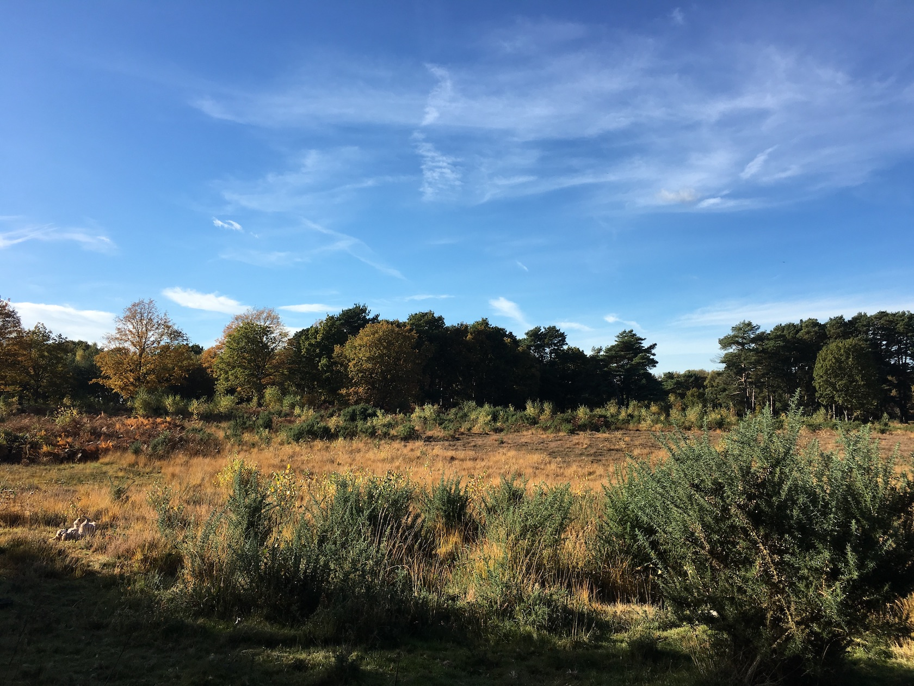

The nature reserve is an 141 acre site around Fleet Pond, the largest fresh water lake in Hampshire. The nature reserve has many miles of trails, most of which are suitable for off-lead dog walking. There is also a picnic area.
For more information , see the Fleet Pond Society website.
After crossing the railway, turn right and follow the gravel track for approximately 400 metres to reach the main car park.